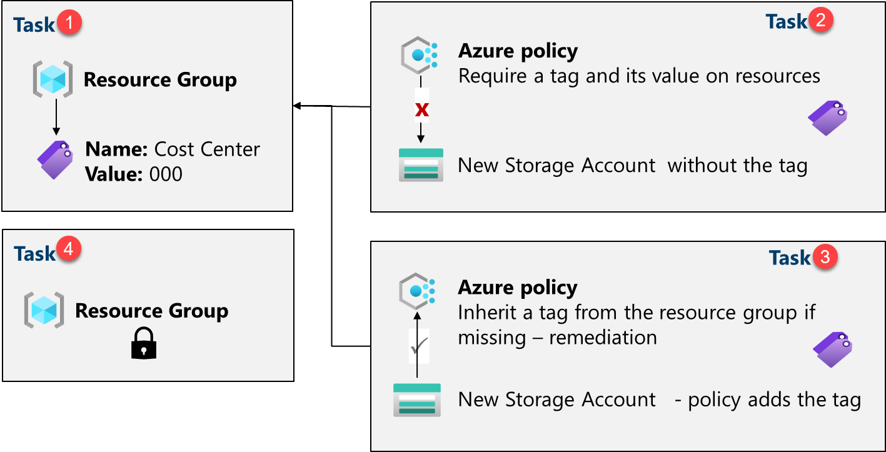
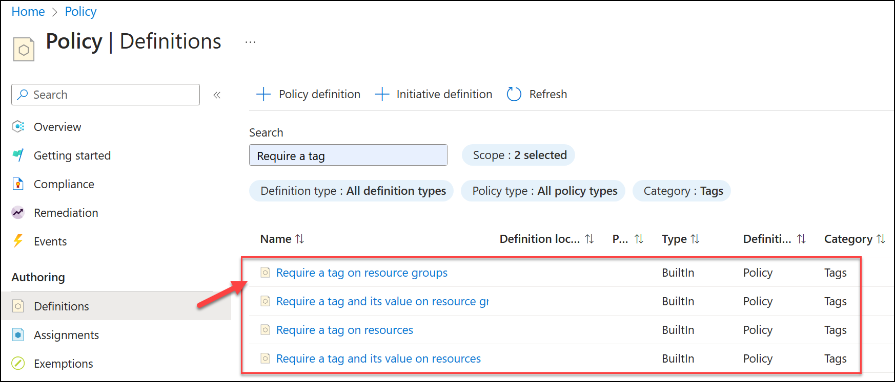
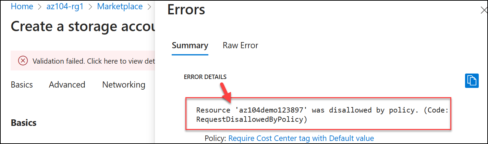
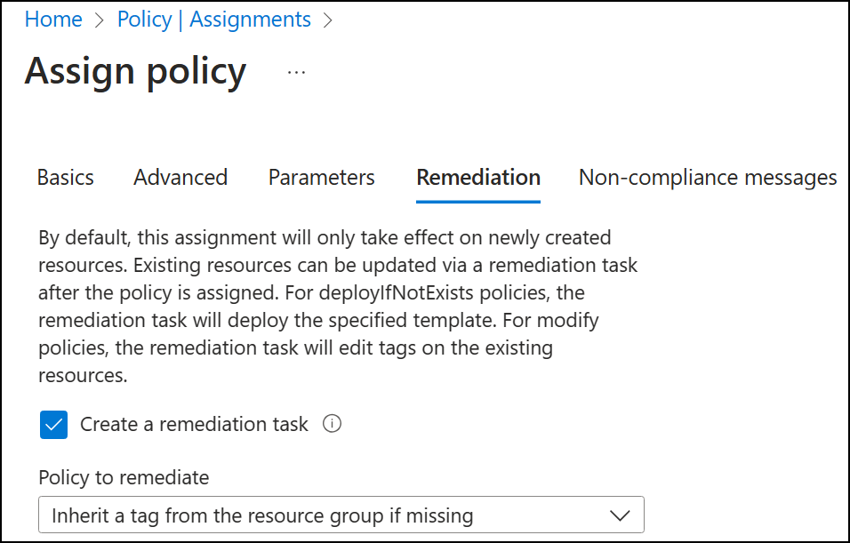
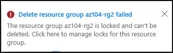

Lab - Manage Governance via Azure Policy
Lab Introduction
In this lab, you learn how to implement your organization’s governance plans. You learn how Azure policies can ensure operational decisions are enforced across the organization. You learn how to use resource tagging to improve reporting.
This lab requires an Azure subscription. Your subscription type may affect the availability of features in this lab. You may change the region, but the steps are written using East US.
Estimated Timing: 30 Minutes
Lab Scenario
Adamantus Technologies cloud footprint has grown considerably in the last year. During a recent audit, you discovered a substantial number of resources that do not have a defined owner, project, or cost center. In order to improve management of Azure resources in your organization, you decide to implement the following functionality:
-
Apply resource tags to attach important metadata to Azure resources
-
Enforce the use of resource tags for new resources by using Azure policy
-
Update existing resources with resource tags
-
Use resource locks to protect configured resources
Interactive Lab Simulations
There are several interactive lab simulations that you might find useful for this topic. The simulation lets you to click through a similar scenario at your own pace. There are differences between the interactive simulation and this lab, but many of the core concepts are the same. An Azure subscription is not required.
-
Manage resource locks. Add a resource lock and test to confirm.
-
Create an Azure policy. Create an Azure policy that restricts the location resources can be located. Create a new resource and ensure the policy is enforced.
-
Manage governance via Azure policy. Create and assign tags via the Azure portal. Create an Azure policy that requires tagging. Remediate non-compliant resources.
Architecture Diagram

Job Skills
- Task 1: Create and assign tags via the Azure portal.
- Task 2: Enforce tagging via an Azure Policy.
- Task 3: Apply tagging via an Azure Policy.
- Task 4: Configure and test resource locks.
Task 1: Assign Tags via the Azure Portal
In this task, you will create and assign a tag to an Azure resource group via the Azure portal. Tags are a critical component of a governance strategy as outlined by the Microsoft Well-Architected Framework and Cloud Adoption Framework. Tags can allow you to quickly identify resource owners, sunset dates, group contacts, and other name/value pairs that your organization deems important. For this task, you assign a tag identifying the resource role ('Infra' for 'Infrastructure').
-
Sign in to the Azure portal -
https://portal.azure.com. -
Search for and select
Resource groups. -
From the Resource groups, select + Create.
Setting Value Subscription name your subscription Resource group name az104-rg2Location East US Note: For each lab in this course you will create a new resource group. This lets you quickly locate and manage your lab resources.
-
Select Next and move to the Tags tab. Provide information for a new tag.
Setting Value Name Cost Center Value 000 -
Select Review + Create, and then select Create.
Task 2: Enforce Tagging via an Azure Policy
In this task, you will assign the built-in Require a tag and its value on resources policy to the resource group and evaluate the outcome. Azure Policy can be used to enforce configuration, and in this case, governance, to your Azure resources.
-
In the Azure portal, search for and select
Policy. -
In the Authoring blade, select Definitions. Take a moment to browse through the list of built-in policy definitions that are available for you to use. Notice you can also search for a definition.

-
Search for the
Require a tag and its value on resourcesbuilt-in policy. Select the policy and take a minute to review the definition. -
Select Assign policy.
-
Specify the Scope by clicking the ellipsis button and selecting the following values. Click Select when you are done.
Setting Value Subscription your subscription Resource Group az104-rg2 Note: You can assign policies on the management group, subscription, or resource group level. You also have the option of specifying exclusions, such as individual subscriptions, resource groups, or resources. In this scenario, we want the tag on all the resources in the resource group.
-
Configure the Basics properties of the assignment by specifying the following settings (leave others with their defaults):
Setting Value Assignment name `Require Cost Center tag and its value on resources Description Require Cost Center tag and its value on all resources in the resource groupPolicy enforcement Enabled Note: The Assignment name is automatically populated with the policy name you selected, but you can change it. The Description is optional. Notice you can disable the policy at any time.
-
Click Next and set Parameters to the following values:
Setting Value Tag Name Cost CenterTag Value 000 -
Click Next and review the Remediation tab. Leave the Create a Managed Identity checkbox unchecked.
-
Click Review + Create and then click Create.
Note: Now you will verify that the new policy assignment is in effect by attempting to create an Azure Storage account in the resource group. You will create the storage account without adding the required tag.
Note: It might take between 5 and 10 minutes for the policy to take effect.
-
In the portal, search for and select
Storage Accounts, and select + Create. -
On the Basics tab of the Create storage account blade, complete the configuration.
Setting Value Resource group az104-rg2 Storage account name any globally unique combination of between 3 and 24 lower case letters and digits, starting with a letter -
Select Review and then click Create.
-
You should receive a Validation failed message. View the message to identify the reason for the failure. Verify the error message states that the resource deployment was disallowed by the policy.

Note: By clicking the Raw Error tab, you can find more details about the error, including the name of the role definition Require a tag and its value on resources. The deployment failed because the storage account you attempted to create did not have a tag named Cost Center with its value set to Default.
Task 3: Apply Tagging via an Azure policy
In this task, we will use the new policy definition to remediate any non-compliant resources. In this scenario, we will make any child resources of a resource group inherit the Cost Center tag that was defined on the resource group.
-
In the Azure portal, search for and select
Policy. -
In the Authoring section, click Assignments.
-
In the list of assignments, click the ellipsis icon in the row representing the Require a tag and its value on resources policy assignment and use the Delete assignment menu item to delete the assignment.
-
Click Assign policy and specify the Scope by clicking the ellipsis button and selecting the following values:
Setting Value Subscription your Azure subscription Resource Group az104-rg2 -
To specify the Policy definition, click the ellipsis button and then search for and select
Inherit a tag from the resource group if missing. -
Select Add and then configure the remaining Basics properties of the assignment.
Setting Value Assignment name Inherit the Cost Center tag and its value 000 from the resource group if missingDescription Inherit the Cost Center tag and its value 000 from the resource group if missingPolicy enforcement Enabled -
Click Next twice and set Parameters to the following values:
Setting Value Tag Name Cost Center -
Click Next and, on the Remediation tab, configure the following settings (leave others with their defaults):
Setting Value Create a remediation task enabled Policy to remediate Inherit a tag from the resource group if missing Note: This policy definition includes the Modify effect. So, a managed identity is required.

-
Click Review + Create and then click Create.
Note: To verify that the new policy assignment is in effect, you will create another Azure storage account in the same resource group without explicitly adding the required tag.
Note: It might take between 5 and 10 minutes for the policy to take effect.
-
Search for and select
Storage Accountand click + Create. -
On the Basics tab of the Create storage account blade, verify that you are using the Resource Group that the Policy was applied to and specify the following settings (leave others with their defaults) and click Review:
Setting Value Storage account name any globally unique combination of between 3 and 24 lower case letters and digits, starting with a letter -
Verify that this time the validation passed and click Create.
-
Once the new storage account is provisioned, click Go to resource.
-
On the Tags blade, note that the tag Cost Center with the value 000 has been automatically assigned to the resource.
Did you know? If you search for and select Tags in the portal, you can view the resources with a specific tag.
Task 4: Configure and Test Resource Locks
In this task, you configure and test a resource lock. Locks prevent either deletions or modifications of a resource.
-
Search for and select your resource group.
-
In the Settings blade, select Locks.
-
Select Add and complete the resource lock information. When finished select Ok.
Setting Value Lock name rg-lockLock type delete (notice the selection for read-only) -
Navigate to the resource group Overview blade, and select Delete resource group.
-
In the Enter resource group name to confirm deletion textbox provide the resource group name,
az104-rg2. Notice you can copy and paste the resource group name. -
Notice the warning: Deleting this resource group and its dependent resources is a permanent action and cannot be undone. Select Delete.
-
You should receive a notification denying the deletion.

Note: You will need to remove the lock if you intend to delete the resource group.
Cleanup your Resources
If you are working with your own subscription take a minute to delete the lab resources. This will ensure resources are freed up and cost is minimized. The easiest way to delete the lab resources is to delete the lab resource group.
- In the Azure portal, select the resource group, select Delete the resource group, Enter resource group name, and then click Delete.
- Using Azure PowerShell,
Remove-AzResourceGroup -Name resourceGroupName. - Using the CLI,
az group delete --name resourceGroupName.
Key Takeaways
Congratulations on completing the lab. Here are the main takeaways for this lab.
- Azure tags are metadata that consists of a key-value pair. Tags describe a particular resource in your environment. In particular, tagging in Azure enables you to label your resources in a logical manner.
- Azure Policy establishes conventions for resources. Policy definitions describe resource compliance conditions and the effect to take if a condition is met. A condition compares a resource property field or a value to a required value. There are many built-in policy definitions and you can customize the policies.
- The Azure Policy remediation task feature is used to bring resources into compliance based on a definition and assignment. Resources that are non-compliant to a modify or deployIfNotExist definition assignment, can be brought into compliance using a remediation task.
- You can configure a resource lock on a subscription, resource group, or resource. The lock can protect a resource from accidental user deletions and modifications. The lock overrides any user permissions.
- Azure Policy is pre-deployment security practice. RBAC and resource locks are post-deployment security practice.
Address: H-34, Ground Floor, Sector 63, Noida, Uttar Pradesh
Email: info@ceekh.com